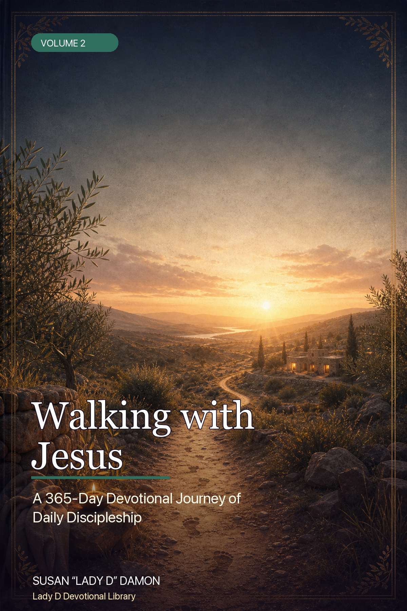
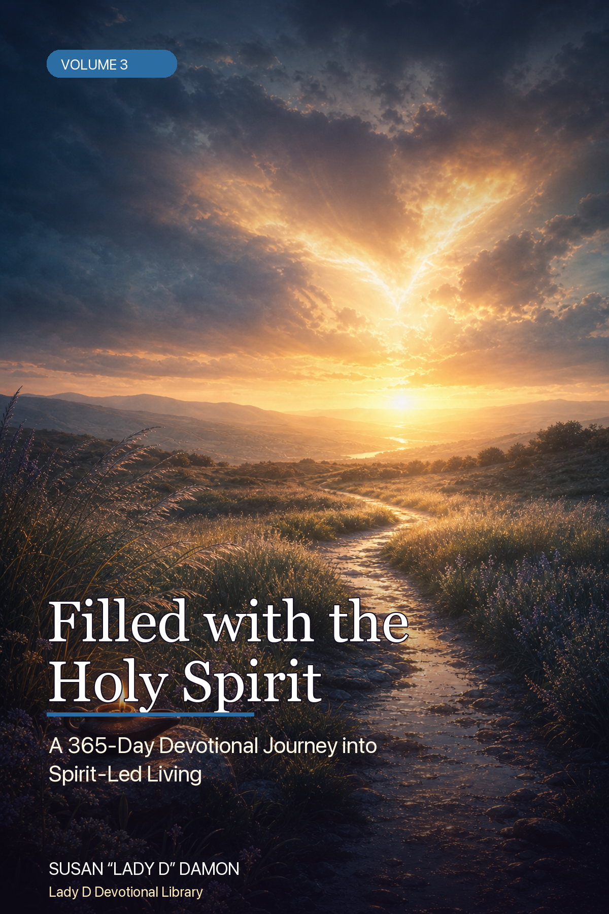

Open the books
Each HTML book includes front matter reserve pages for dedication, foreword/article, Lady D note, author bio, copyright/permissions, and a page-numbered devotional flow.

Volume 1 · HTML review edition
Surrendering to God's Love
A 365-Day Devotional Journey into the Father's Heart
366 devotional entries 373 numbered pages
Open complete HTML bookOpen PDFOpen journal PDF
Volume 2 · HTML review edition
Walking with Jesus
A 365-Day Devotional Journey of Daily Discipleship
366 devotional entries 373 numbered pages
Open complete HTML bookOpen PDFOpen journal PDF
Volume 3 · HTML review edition
Filled with the Holy Spirit
A 365-Day Devotional Journey into Spirit-Led Living
366 devotional entries 373 numbered pages
Open complete HTML bookOpen PDFOpen journal PDFProposal & Execute-Ready Invoice
The corrected package now has a robust proposal/invoice page like the Oakwood hub: viewable HTML proposal, downloadable PDF invoice/proposal, $2,000 package total, $600 paid, $1,400 balance due, live dashboard, enhanced State of the Union, enhanced Plan of Attack, and future Lady D product website.
View proposalDownload PDFPay $1,400 securelyLive dashboardEnhanced StateEnhanced Plan
What has been done
- Three 365-day devotional manuscripts are assembled into author-review HTML books.
- Existing PDF/DOCX interior drafts remain linked for print-style review.
- Companion journal PDFs are linked beside each matching devotional.
- Cover concepts have been consolidated into a clean review presentation.
- Release-control, proof-audit, and production dashboards remain available for deeper production review.
What still needs Lady D / Jon approval before final upload
- Final dedication, acknowledgments, author bio, author note, and any outside foreword/article.
- Final Scripture translation policy and permission/copyright notice.
- Final cover lane selection and KDP full-wrap regeneration from locked page count.
- Final author-voice copyedit and theological proof.
- KDP Previewer pass, physical proof order, and final upload metadata.